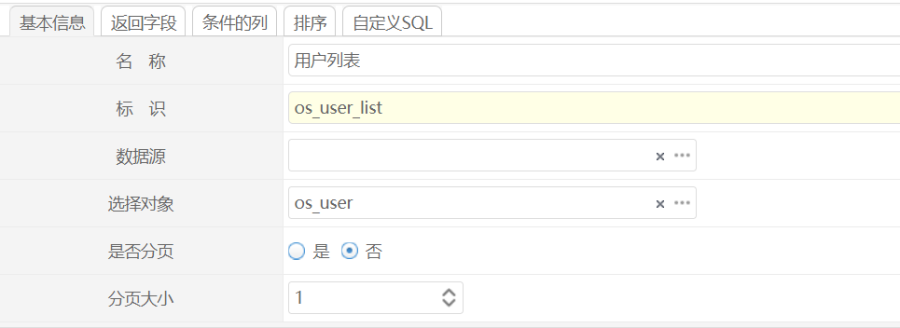
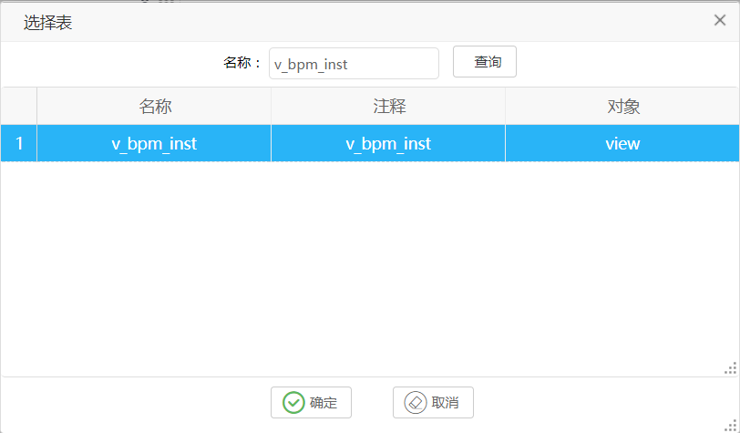
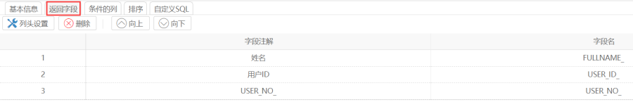
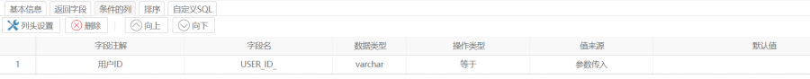
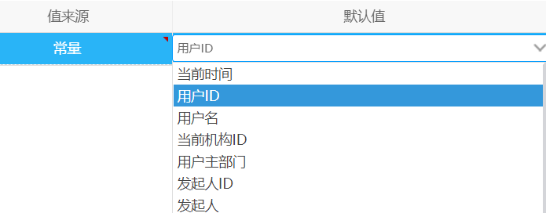
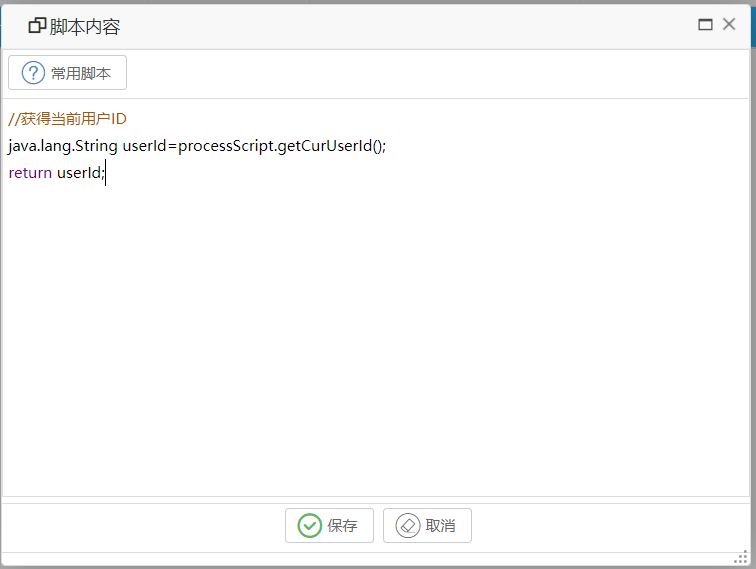
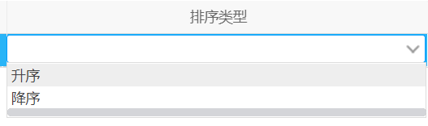
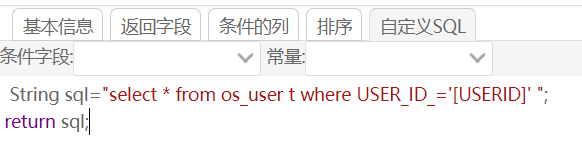
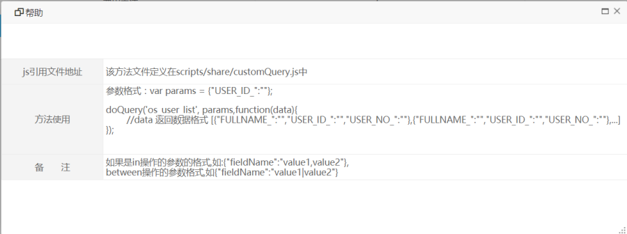

功能说明
我们在表单中很多情况下，需要查询数据，对表单进行填充，这种情况下，我们一般是需要在编写控制器代码，查询数据然后进行返回，这样在配置表单时需要开发人员参与，而且需要重启服务器，非常麻烦。我们设计此功能的目的是通过界面配置就可以实现服务器数据查询，在前台可以通过配置或者使用脚本进行调用定义好的查询进行返回数据。
操作步骤
1.添加自定义查询
点击 “系统配置”->“系统管理”->“自定义SQL查询”->点击添加按钮。

1.1.基本信息：
名称：填写有意义的名称
标识：唯一名称
数据源：需要查询的数据库，这个数据源可以参考 “系统配置”-》“数据源管理”
选择对象：这里可以选择表或者视图

1.2设置返回字段，这些列是返回数据用的。
我们定义一个OS_USER查询为例。

这里自定查询将会返回三个字段，这里我们可以修改字段注解。
1.3 设置条件列

自定义查询一般都需要根据条件过滤数据，当然有些配置数据特别小，我们就不需要配置条件。
配置条件说明:
字段注解：用于显示
字段名称：用于作为WHERE 条件
数据类型：字段的类型
操作类型：根据实际的需求配置
值来源:
参数传入：这个一般是从页面传入进来，典型的例子时，我们在表单选择了一个用户，我们需要取该用户的订单信息，我们可以通过从页面传入参数。
固定值：条件为固定值，比如获取全部女生，我们就可以使用固定值。
常量：

我们可以使用常量来进行过滤，比如当前人，当前部门等。
脚本：
有时候条件需要通过脚本进行计算，这里的脚本是java脚本。

我们可以选择常用脚本，也可以直接编写脚本。
1.4 设置排序列
意思是我们在做查询时，返回的数据可以按照设置的排序来处理。
选择需要排序的列，接下来选择排序，是升序还是降序排列。

1.5 自定义SQL
有些情况下，通过前面的配置可能配置不出来，我们需要的数据，这个时候我们可以通过自定SQL返回我们需要的语句,程序在处理的时候就不会
查询前面配置的表，我们需要通过手工进行输入。

1.这个自定义SQL的写法是使用java语法，需要返回一个SQL语句，当然我们可以不使用select * 的方式来写，我们可以指定字段名。
这里我们我们需要在返回字段设置那里进行手工设置。
2.在自定SQL中可以使用常量，我们会在后台将常量进行替换。
3.上下文传入参数获取方式。
我们在处理自定sql查询的时候会将 参数封装到一个名称为 “params”的map中，我们脚本可以这样写。
比如我们定义了一个传入参数 USER_ID
String sql=＂select USER_ID_,NAME_ FORM OS_USER WHERE 1=1 ＂;
if(params.containsKey(＂USER_ID＂)){
sql+=＂ and user_id=：＂+USER_ID +＂：＂;
}
return sql;
我们可以在条件列那里设置传入参数作为外部参数。
2.通过脚本调用自定查询
除了在表单中通过配置使用自定查询外，我们也可以通过在页面中编码的方式调用自定义查询。我们可以在列表中点击帮助按钮。

使用方法:
1.我们可以引入 scripts/share/customQuery.js 文件。
2.编写如下代码：
参数格式：var params = {＂USER_ID_＂:＂＂};doQuery(：os_user_list：, params,function(data){
//data 返回数据格式 [{＂FULLNAME_＂:＂＂,＂USER_ID_＂:＂＂,＂USER_NO_＂:＂＂},{＂FULLNAME_＂:＂＂,＂USER_ID_＂:＂＂,＂USER_NO_＂:＂＂},...]}); |
doQuery的参数为：
参数1：自定义查询名称
参数2：传入参数，我们在后端配置了传入参数USER_ID_。
参数3 ：回调函数,data返回的数据。
function(data){
console.info(data);//我们可以通过这种方式查看返回的数据格式。
}